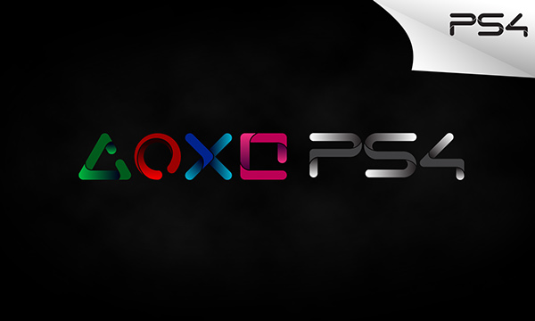

<!DOCTYPE html>
<html lang="en">
  <head>
    <meta charset="UFT-8" />
    <title>LO MEJOR DEL PLAY 4 $</title>
    <style type="text/css">
      article {
        margin: 10px 0;
        background: #fff;
        color: #000;
        font-size: 16px;
        line-height: 28px;
        padding: 10px;
        width: 90%;
        padding: inherit;
      }

      body {
        background: #f4f4fa;
        font-family: 'Open Sans', sans-serif;
      }
    </style>
  </head>
</html>
<body>
  
  <section class="wraper"></section>
  <section class="mein"></section>
  <article>
    <h1>Que es la play 4</h1>
    <p>
      <strong>Play 4:</strong> es un sistema de entretenimiento digital y la
      cuarta consola de sobremesa desarrollada por Sony Computer Entertainment.
      Cuenta con un procesador APU de ocho núcleos x86-64 Jaguar desarrollado
      por AMD.
    </p>
    <h1>Para que nos sirve un play 4!</h1>
    <p>
      <strong>NO solo es una consola para videojuegos :</strong> La consola
      tiene salida HDMI, salida digital (audio óptico), Ethernet, dos puertos
      USB 3.0 y un conector auxiliar reservado para PlayStation Camera. También
      cuenta con funciones integradas de 802.11 b/g/n Wi-Fi y Bluetooth 2.1 para
      conectar el DualShock 4 <u>PLAY PLAY.</u>.
    </p>
    <h3>Tipos de consolas de sony desde su comienzo</h3>
    <p>
      PlayStation siempre ha sido, desde un primer momento, una perfecta fusión
      de Oriente y Occidente. Juegos de origen arcade y géneros japoneses
      representados por títulos como Ridge Racer o Final Fantasy, acompañados de
      clásicos occidentales del renombre de Tomb Raider o Grand Theft Auto. Y lo
      que es más importante: juegos japoneses con temáticas que interesan a los
      occidentales, como Gran Turismo o Resident Evil. Esto ha conseguido que
      sea una marca implantada, con gran éxito, en todo el mundo, algo que no
      puede decirse de la competencia..
    </p>
    <ol>
      <li>La Play (1994)</li>
      <li>PlayStation 2 (2000)</li>
      <li>PlayStation 3 (2006)</li>
      <li>PlayStation 4 (2013)</li>
    </ol>
  </article>
  <form action="file:///C:/xampp/htdocs/sena/index.html">
    <input type="submit" value="Submit "/><br>
</form>
</body>
</html></body>
